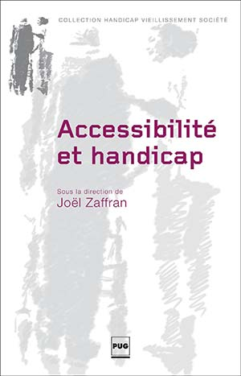
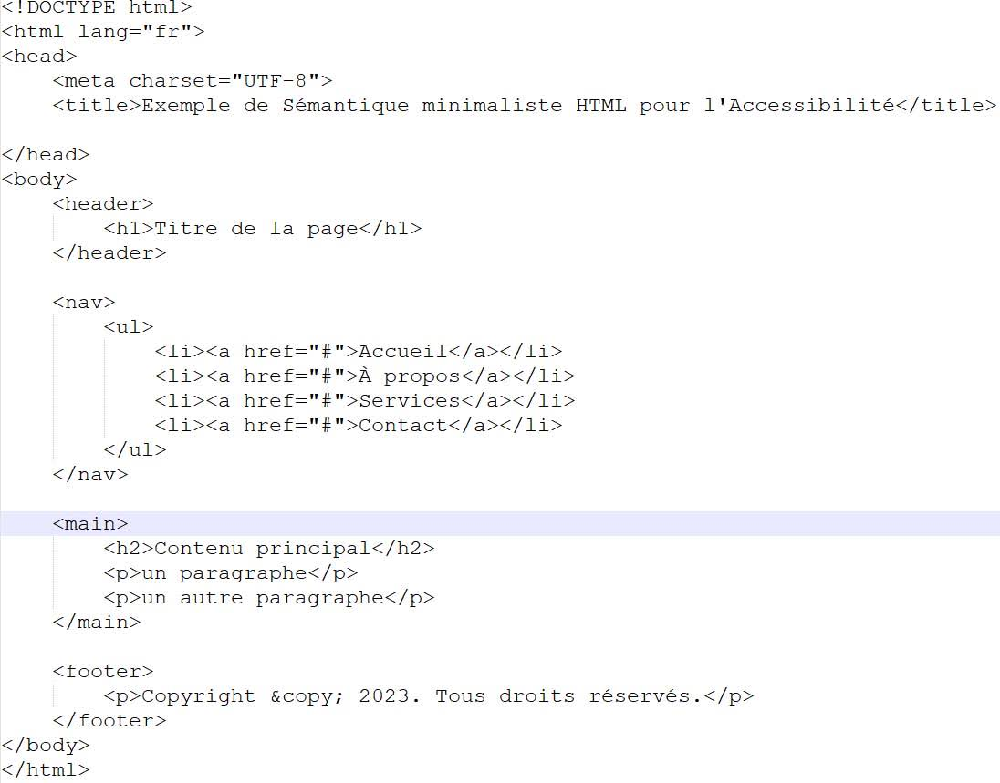

Quelques bonnes pratiques d'accessibilité...

Que faire avec des images décoratives ?
Utiliser des attributs "alt" vides ou nuls afin d'éviter qu'elles soient lues par les technologies d'assistance.
Quoi mettre dans les alternatives textuelles des images informatives ?
Des descriptions appropriées pour fournir des informations équivalentes pour les utilisateurs qui ne peuvent pas voir les images. Les attributs title et aria-describedby ne sont pas indispensables !
Balises HTML sémantiques
Utiliser des balises HTML sémantiques appropriées (telles que <header>, <nav>, <main>, <section>, <article>, <aside>, <footer>) pour améliorer la structure et la compréhension du contenu par les technologies d'assistance.
Purement démonstratif, cette image affiche une page HTML avec les balises habituelles qui permettent de structurer le code de la page.
<!DOCTYPE html>
<html lang="fr">
<head>
<meta charset="UTF-8">
<title>Exemple de Sémantique minimaliste HTML pour l'Accessibilité</title>
</head>
<body>
<header>
<h1>Titre de la page</h1>
</header>
<nav>
<ul>
<li> <a href="#">Accueil</a> </li>
<li> <a href="#">À propos</a> </li>
<li> <a href="#">Services</a> </li>
<li> <a href="#">Contact</a> </li>
</ul>
</nav>
<main>
<h2>Contenu principal </h2>
<p>un paragraphe </p>
<p>un autre paragraphe </p>
</main>
<footer>
<p>Copyright © 2023. Tous droits réservés. </p>
</footer>
</body>
</html>
Régler les problèmes de contraste des couleurs
Utiliser des combinaisons de couleurs offrant un contraste suffisant pour rendre le contenu lisible pour les personnes atteintes de déficience visuelle.

Comment rendre les formulaires accessibles ?
Il faut utiliser des balises HTML sémantiques et utiliser des patterns ARIA :
- aria-label
- aria-live
- aria-autocomplete
- aria-checked
- aria-modal
- aria-selected
... pour améliorer la compréhension du contenu par les technologies d'assistance.
Comment réaliser un audit d'accessibilité de votre site web ?

ARA vous propose une méthodologie pour réaliser 3 types d'audit
Rapide (25 critères du RGAA)
Complétmentaire (50 critères du RGAA)
Complet dit de conformité (106 critères du RGAA)